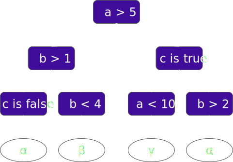

Suggesting Fixes during Code Review with ML
Vadim Markovtsev
Machine Learning for
Large Scale Code Analysis
Plan
Origins ➙ Lookout ➙ SDK ➙ Demo ➙ style-analyzer
Many efforts target boring stuff
Automatable ‚↠unattended üòî
When to help?
- While you type = IDE
- While you check = CI
- While you review = PR
- Periodically, asynchronously
Goals
- Assisted code review platform
- Tight git/GitHub integration
- Analyzed language agnostic
- Implementation language agnostic
- Batteries included
Architecture

Push event

Push event

Push event

Push event

Push event

Push event

PR event

PR event

docs.sourced.tech/lookout
src-d/lookout-sdk
- Single source of gRPC definitions
- Low-level API: Go, Python
- Low-level examples
src-d/lookout-sdk-ml
- High-level Python API
- Stateful analyzers
- Integrated with source{d} ml ecosystem
Rule of üëç

High-level API
class MyAnalyzer(Analyzer):
@classmethod
def train(cls, ...) -> AnalyzerModel:
# ...
def analyze(self, ...) -> [Comment]:
# do something with self.model
Train
@with_uasts_and_contents
def train(cls,
ptr: ReferencePointer,
config: Dict[str, Any],
data_service: DataService,
files: Iterable[File]
) -> AnalyzerModel:
Analyze
@with_changed_uasts_and_contents
def analyze(self,
ptr_from: ReferencePointer,
ptr_to: ReferencePointer,
data_service: DataService,
changes: Iterable[Change]
) -> [Comment]:
Behind the scenes
- gRPC servers and clients
- Pooling and threading
- Database of trained models
- Caches
- Logging
- Metrics

Training
- Parse to intermediate representation
- Train Decision Tree Forest
- Extract production rules
Virtual nodes

a = b * 2
Machine Learning
- Feature selection (univariate, ANOVA F-criterion)
- Hyperparameter optimization (Bayesian)
- 80% + 20% split
Rules

a≤5 Œõ b≤1 Œõ c ‚áí αa≤5 Œõ 1<b<4 ‚áí β5<a<10 Œõ c ‚áí γa>5 Œõ c Œõ b>2 ‚áí α
Rules optimization
a>5 Œõ c Œõ b>2 Œõ d Œõ a>10 ‚áí α(merge)
a>10 Œõ c Œõ b>2 Œõ d ‚áí α(redundant)
a>10 Œõ c Œõ d ‚áí α(feature exclusion)
a>10 Œõ c ‚áí α
Result
- -40% ~ -60% less attributes
- -30% ~ -50% less rules
Rules optimization
a>5 Œõ c Œõ b>2 Œõ d Œõ a>10 ‚áí α(merge)
a>10 Œõ c Œõ b>2 Œõ d ‚áí α(redundant)
a>10 Œõ c Œõ d ‚áí α(feature exclusion)
a>10 Œõ c ‚áí α(confidence threshold)
Result
- -40% ~ -50% less rules @93%
Inference
- Apply rules
- Fixes to old code?
- AST breakage?
- Identification?
- Generate code
- Indentation?
- Multiple lines?
Evaluation

We don't test the real behavior
Evaluation
- 170 handcrafted errors
- 2 projects
- 95% precision @50% PredR
We don't test the real behavior
Evaluation improvements
- Extend
- Random mutations
- Extract from commits
Summary
- Assisted code review + Lookout = ♥
- style-analyzer is fun
- #MLonCode is dope